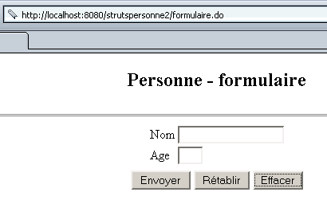
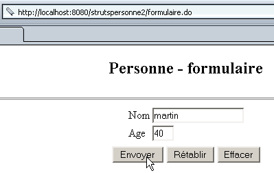

5. Dynamische Formulare mit Integritätsbeschränkungen
Wir werden nun eine neue Anwendung namens „strutspersonne2“ entwickeln, die
- ein dynamisches Formular wie in „strutspersonne1“
- eine Datei mit der Deklaration der Integritätsbeschränkungen, die von den Feldern dieses dynamischen Formulars überprüft werden sollen
5.1. Deklaration der Integritätsbeschränkungen
Die Klasse, die zum Speichern der Werte „name“ und „age“ in der Anwendung „strutspersonne1“ verwendet wurde, war wie folgt deklariert:
<form-beans>
<form-bean name="frmPersonne" type="istia.st.struts.personne.PersonneDynaForm">
<form-property name="nom" type="java.lang.String" initial=""/>
<form-property name="age" type="java.lang.String" initial=""/>
</form-bean>
</form-beans>
Wir mussten die Klasse PersonneDynaForm erstellen, um über eine Validierungsmethode zu verfügen, mit der überprüft werden kann, ob die Werte für „name“ und „age“ im dynamischen Formular gültig sind. Es gab zwei Arten von Überprüfungen:
- Beide Felder durften nicht leer sein
- das Feld „age“ musste die Maske (regulärer Ausdruck) \s*\d+\s* erfüllen
Diese beiden Überprüfungen gehören zu den Überprüfungen, die die Umgebung StrutsValidator durchführen kann. Diese Umgebung wird mit Struts mitgeliefert und umfasst eine Reihe von Klassen, die in commons-validator.jar und jakarta-oro.jar zu finden sind. Wenn Sie die zu Beginn dieses Dokuments beschriebene Vorgehensweise zur Installation der Struts-Bibliotheken in Tomcat befolgt haben, stehen diese Bibliotheken in Tomcat bereits zur Verfügung. Stellen Sie sicher, dass sie auch in JBuilder verfügbar sind. Dies wurde ebenfalls zu Beginn dieses Dokuments erläutert.
Die neue Deklaration des Formulars in struts-config.xml lautet nun wie folgt:
<form-beans>
<form-bean name="frmPersonne" type="org.apache.struts.validator.DynaValidatorForm">
<form-property name="nom" type="java.lang.String" initial=""/>
<form-property name="age" type="java.lang.String" initial=""/>
</form-bean>
</form-beans>
Es gibt also kaum Unterschiede. Die dem dynamischen Formular zugeordnete Klasse ist nun eine vordefinierte Klasse von StrutsValidator: org.apache.struts.validator.DynaValidatorForm. Der Entwickler muss keine Klasse mehr schreiben. Er legt die Integritätsprüfungen, die das Formular durchführen muss, in einer separaten Datei XML fest. Der Struts-Controller muss den Namen dieser Datei kennen. Zu diesem Zweck erscheint ein neuer Konfigurationsabschnitt in der Datei struts-config.xml:
<plug-in className="org.apache.struts.validator.ValidatorPlugIn">
<set-property
property="pathnames"
value="/WEB-INF/validator-rules.xml,/WEB-INF/validation.xml"
/>
</plug-in>
Der Abschnitt <plug-in> dient dazu, eine externe Klasse in Struts zu laden. Sein Hauptattribut ist „classname“, das den Namen der zu instanziierenden Klasse angibt. Das instanziierte Objekt muss möglicherweise initialisiert werden. Dies geschieht mithilfe von „set-property“-Tags, die zwei Attribute haben:
- property: der Name der zu initialisierenden Eigenschaft
- value: der Wert der Eigenschaft
In diesem Fall benötigt die Klasse „DynaValidatorForm“ zwei Informationen:
- die Datei „XML“, die die Standard-Integritätsbeschränkungen definiert, die die Klasse überprüfen kann.
- die Datei XML, die die Integritätsbeschränkungen der verschiedenen dynamischen Formulare der Anwendung definiert
Diese beiden Informationen werden hier über die Eigenschaft „pathnames“ bereitgestellt. Der Wert dieser Eigenschaft ist eine Liste von XML-Dateien, die der Validator laden wird:
- validator-rules.xml ist die Datei, die die Standard-Integritätsbedingungen definiert. Sie wird mit Struts ausgeliefert. Sie befindet sich im Verzeichnis <struts>\lib zusammen mit der zugehörigen Definitionsdatei DTD:

- validation.xml definiert die Integritätsbeschränkungen der verschiedenen dynamischen Formulare der Anwendung. Sie wird vom Entwickler erstellt. Der Name ist frei wählbar.
Diese beiden Dateien können an beliebiger Stelle unter WEB-INF abgelegt werden. In unserem Beispiel werden sie direkt unter WEB-INF abgelegt:

5.2. Festlegen der Integritätsbeschränkungen für dynamische Formulare
Die Datei validation.xml enthält unsere Integritätsbeschränkungen für die Felder „name“ und „age“ des Formulars frmPersonne vom Typ org.apache.struts.validator.DynaValidatorForm. Ihr Inhalt lautet wie folgt:
<form-validation>
<global>
<constant>
<constant-name>entierpositif</constant-name>
<constant-value>^\s*\d+\s*$</constant-value>
</constant>
</global>
<formset>
<form name="frmPersonne">
<field property="nom" depends="required">
<arg0 key="personne.nom"/>
</field>
<field property="age" depends="required,mask">
<arg0 key="personne.age"/>
<var>
<var-name>mask</var-name>
<var-value>${entierpositif}</var-value>
</var>
</field>
</form>
</formset>
</form-validation>
Es sind folgende Schreibregeln zu beachten:
- Alle Regeln befinden sich innerhalb eines <form-validation>-Tags
- Das Tag <global> dient dazu, Informationen mit globalem Geltungsbereich zu definieren, c.a.d. Dies gilt für alle Formulare, falls mehrere vorhanden sind. Hier wurden im Tag <global> Konstanten festgelegt. Eine Konstante wird durch ihren Namen (Tag <constant-name>) und ihren Wert (Tag <constant-value>) definiert. Wir definieren die Konstante „entierpositif“ mit dem Wert des regulären Ausdrucks, den eine positive ganze Zahl erfüllen muss: ^\s*\d+\s*$ (eine Folge von Ziffern, der gegebenenfalls Leerzeichen vorangehen und/oder folgen).
- Das Tag <formset> definiert die Gesamtheit der Formulare, für die Integritätsbedingungen zu überprüfen sind
- Das Tag <form name="unFormulaire"> dient dazu, die Integritätsbedingungen eines bestimmten Formulars zu definieren, dessen Name durch das Attribut „name“ angegeben wird. Dieser Name muss in der Liste der in struts-config.xml definierten Formulare vorhanden sein. Hier wird das verwendete Formular frmPersonne in struts-config.xml durch den folgenden Abschnitt definiert:
<form-beans>
<form-bean name="frmPersonne" type="org.apache.struts.validator.DynaValidatorForm">
<form-property name="nom" type="java.lang.String" initial=""/>
<form-property name="age" type="java.lang.String" initial=""/>
</form-bean>
- Ein <form>-Tag enthält so viele <field>-Tags, wie Integritätsprüfungen für das Formular durchgeführt werden sollen. Ein <field>-Tag verfügt über folgende Attribute:
- property: Name des Formularfelds, für das Integritätsprüfungen definiert werden
- depends: Liste der zu prüfenden Integritätsbedingungen.
- Mögliche Einschränkungen sind: required (das Feld darf nicht leer sein), mask (der Wert des Feldes muss einem durch die Variable „mask“ definierten regulären Ausdruck entsprechen), integer: Der Wert des Feldes muss eine Ganzzahl sein, byte (Byte), long (Long-Ganzzahl), float (Einfach-Gleitkommazahl), double (Doppel-Gleitkommazahl), short (Kurz-Ganzzahl), date (der Wert des Feldes muss ein gültiges Datum sein), range (der Wert des Feldes muss in einem vorgegebenen Intervall liegen), email: (der Wert des Feldes muss eine gültige E-Mail-Adresse sein), ...
- Die Integritätsbeschränkungen werden in der Reihenfolge des Attributs „depends“ überprüft. Wenn eine Beschränkung nicht erfüllt ist, werden die folgenden nicht geprüft.
- Jede Einschränkung ist mit einer durch einen Schlüssel definierten Fehlermeldung verknüpft. Hier sind einige Beispiele im Format „Einschränkung (Schlüssel)“: required (errors.required), mask (errors.invalid), integer (errors.integer), byte (errors.byte), long (errors.long), ...
- Die zu den oben genannten Schlüsseln gehörenden Fehlermeldungen sind in der Datei validator-rules.xml definiert:
# Struts-Validator-Fehlermeldungen
errors.required={0} is required.
errors.minlength={0} can not be less than {1} characters.
errors.maxlength={0} can not be greater than {1} characters.
errors.invalid={0} is invalid.
errors.byte={0} must be a byte.
errors.short={0} must be a short.
errors.integer={0} must be an integer.
errors.long={0} must be a long.
errors.float={0} must be a float.
errors.double={0} must be a double.
errors.date={0} is not a date.
errors.range={0} is not in the range {1} through {2}.
errors.creditcard={0} is an invalid credit card number.
errors.email={0} is an invalid e-mail address.
- Wie oben zu sehen ist, sind die Meldungen auf Englisch. Außerdem befinden sie sich als Kommentare in der Datei, in der angegeben ist, dass sie in die Meldungsdatei der Anwendung übernommen werden müssen. Zur Erinnerung: Diese ist in einem Abschnitt der Datei struts-config.xml definiert:
Das Attribut „parameter“ gibt an, dass sich die Anwendungsmeldungen in der Datei
WEB-INF/classes/ressources/personneressources.properties.
Die Fehlermeldungen sind daher in dieser Datei abzulegen. Sie werden zu den bereits vorhandenen hinzugefügt:
personne.formulaire.nom.vide=<li>Vous devez indiquer un nom</li>
personne.formulaire.age.vide=<li>Vous devez indiquer un age</li>
personne.formulaire.age.incorrect=<li>L'âge est incorrect</li>
errors.header=<ul>
errors.footer=</ul>
# Fehlermeldungen des Struts Validators
# Der Schlüssel ist vordefiniert und darf nicht geändert werden
# Die zugehörige Fehlermeldung ist frei wählbar
# Die Meldung kann bis zu 4 Parameter haben: {0} bis {3}
errors.required=<li>Le champ [{0}] doit être renseigné.</li>
errors.minlength=<li>Le champ [{0}] foit avoir au moins {1} caractère.</li>
errors.maxlength=<li>Le champ [{0}] ne peut avoir plus de {1} caractères.</li>
errors.invalid=<li>Le champ [{0}] est incorrect.</li>
errors.byte=<li>{0} doit être un octet.</li>
errors.short=<li>{0} doit être un entier court.</li>
errors.integer=<li>{0} doit être un entier.</li>
errors.long=<li>{0} doit être un entier long.</li>
errors.float=<li>{0} doit être un réel simple.</li>
errors.double=<li>{0} doit être un réel double.</li>
errors.date=<li>{0} n'est pas une date valide.</li>
errors.range=<li>{0} doit être dans l'intervalle {1} à {2}.</li>
errors.creditcard=<li>{0} n'est pas un numéro de carte valide.</li>
errors.email=<li>{0} n'est pas une adresse électronique valide.</li>
personne.nom=nom
personne.age=age
Betrachten wir die Integritätsprüfungen der Datei validation.xml nacheinander, um sie zu erläutern:
<formset>
<form name="frmPersonne">
<field property="nom" depends="required">
<arg0 key="personne.nom"/>
</field>
...
</form>
</formset>
Zur Erinnerung: Diese Integritätsprüfungen gelten für die Felder „name“ und „age“ eines dynamischen Formulars, das in struts-config.xml definiert ist:
<form-bean name="frmPersonne" type="org.apache.struts.validator.DynaValidatorForm">
<form-property name="nom" type="java.lang.String" initial=""/>
<form-property name="age" type="java.lang.String" initial=""/>
</form-bean>
Es ist wichtig, dass die Namen des Formulars und seiner Felder in beiden Dateien identisch sind. Die Integritätsbeschränkung für das Feld „nom“ (property="nom") besagt, dass das Feld nicht leer sein darf (depends="required"). Ist dies nicht der Fall, wird ein Objekt ActionError mit dem Schlüssel errors.required generiert. Die zu diesem Schlüssel gehörende Meldung befindet sich in der Datei personne.ressources.properties:
Man sieht, dass diese Meldung einen Parameter {0} verwendet. Dessen Wert wird durch das Tag <arg0> der Integritätsbeschränkung festgelegt:
Auch hier wird arg0 durch einen Schlüssel bezeichnet, der ebenfalls in der Meldungsdatei zu finden ist:
Fügt man all dies zusammen, lautet die Fehlermeldung, die generiert wird, wenn das Feld „name“ nicht ausgefüllt ist:
Betrachten wir nun die zweite Einschränkung, die sich auf das Feld „age“ bezieht:
<global>
<constant>
<constant-name>entierpositif</constant-name>
<constant-value>^\s*\d+\s*$</constant-value>
</constant>
</global>
<formset>
<form name="frmPersonne">
...
<field property="age" depends="required,mask">
<arg0 key="personne.age"/>
<var>
<var-name>mask</var-name>
<var-value>${entierpositif}</var-value>
</var>
</field>
</form>
</formset>
Für das Feld „age“ gibt es zwei Einschränkungen: „required“ und „mask“. Die vorherige Erklärung lässt sich für die Einschränkung „required“ wiederholen. Daraus ergibt sich, dass die mit dieser Einschränkung verbundene Fehlermeldung lautet:
Die zweite Einschränkung ist „mask“. Das bedeutet, dass der Inhalt des Feldes einem Muster entsprechen muss, das durch einen regulären Ausdruck ausgedrückt wird. Der Wert dieser Einschränkung wird in einem <var>-Tag definiert, der eine Variable mit dem Namen „mask“ (<var-name>) festlegt, deren Wert ${entierpositif} (<var-value>) ist. „entierpositif“ ist eine im Abschnitt <global> der Datei definierte Konstante, deren Wert der reguläre Ausdruck ^\s*\d+\s*$ ist. Die Integritätsbeschränkung besagt also, dass das Alter aus einer Folge von einer oder mehreren Ziffern bestehen muss, der gegebenenfalls Leerzeichen vorangestellt oder nachgestellt sind. Wird diese Beschränkung nicht erfüllt, wird ein Objekt ActionError mit dem Schlüssel errors.invalid generiert. In der Meldungsdatei ist dieser Schlüssel der folgenden Meldung zugeordnet:
Die Einschränkung muss einen Wert für den Parameter {0} festlegen. Dies geschieht mithilfe des Tags <arg0>:
In der Meldungsdatei ist der Schlüssel personne.age der folgenden Meldung zugeordnet:
Die Fehlermeldung, die generiert wird, wenn die Einschränkung „mask“ nicht erfüllt ist, lautet daher:
5.3. Die Klassen der Anwendung
In einer Struts-Anwendung müssen die Klassen für die Formulare (ActionForm oder abgeleitete Klassen) und für die Aktionen (Action oder abgeleitete Klassen) geschrieben werden. In der neuen Anwendung „strutspersonne2“ gibt es keine Klasse mehr für das Formular. Der Inhalt des Formulars wird in struts-config.xml definiert, die zugehörigen Integritätsbeschränkungen in WEB-INF/validation.xml. In der Anwendung „strutspersonne1“ sah die Klasse FormulaireAction zur Formularverarbeitung wie folgt aus:
package istia.st.struts.personne;
....
public class FormulaireAction
extends Action {
public ActionForward execute(ActionMapping mapping, ActionForm form,
HttpServletRequest request, HttpServletResponse response) throws IOException,
ServletException {
// Das Formular ist gültig, sonst wären wir nicht hierher gelangt
DynaActionForm formulaire=(DynaActionForm)form;
request.setAttribute("nom",formulaire.get("nom"));
request.setAttribute("age",formulaire.get("age"));
return mapping.findForward("reponse");
}//ausführen
}
Die Klasse FormulaireAction erwartete ein Formular in Form eines Objekts DynaActionForm (eingerahmter Code). In der Datei struts-config.xml ist die Klasse des Formulars jedoch wie folgt definiert:
<form-bean name="frmPersonne" type="org.apache.struts.validator.DynaValidatorForm">
...
</form-bean>
Das Formular wird also in ein Objekt vom Typ DynaValidatorForm eingefügt. Diese Klasse ist von der Klasse DynaActionForm abgeleitet. Die Methode „execute“ unserer Klasse FormulaireAction bleibt daher gültig. Sie muss nicht neu geschrieben werden.
5.4. Bereitstellung und Test der Anwendung „strutspersonne2“
5.4.1. Erstellung des Kontexts
Wir haben diese neue Anwendung „strutspersonne2“ genannt. Wir erstellen eine neue Definition in der Tomcat-Datei <tomcat>\conf\serveur.xml von Tomcat 4.x:
Anschließend muss Tomcat neu gestartet werden. Die Gültigkeit des Kontexts lässt sich überprüfen, indem man die Seite URL aufruft:
http://localhost:8080/strutspersonne2/

5.4.2. Die Ansichten
Wir kopieren den Ordner „vues“ der Anwendung „strutspersonne1“ in den Ordner der Anwendung „strutspersonne2“. Die Ansichten haben sich nämlich nicht geändert.

5.4.3. Der Ordner „WEB-INF“
Wir kopieren den Ordner „WEB-INF“ aus der Anwendung „strutspersonne1“ in den Ordner der Anwendung „strutspersonne2“. Einige Dateien haben sich geändert:

Die Konfigurationsdatei struts-config.xml sieht nun wie folgt aus:
<?xml version="1.0" encoding="ISO-8859-1" ?>
<!DOCTYPE struts-config PUBLIC
"-//Apache Software Foundation//DTD Struts Configuration 1.1//EN"
"http://jakarta.apache.org/struts/dtds/struts-config_1_1.dtd">
<struts-config>
<form-beans>
<form-bean name="frmPersonne" type="org.apache.struts.validator.DynaValidatorForm">
<form-property name="nom" type="java.lang.String" initial=""/>
<form-property name="age" type="java.lang.String" initial=""/>
</form-bean>
</form-beans>
<action-mappings>
<action
path="/main"
name="frmPersonne"
validate="true"
input="/erreurs.do"
scope="session"
type="istia.st.struts.personne.FormulaireAction"
>
<forward name="reponse" path="/reponse.do"/>
</action>
<action
path="/erreurs"
parameter="/vues/erreurs.personne.jsp"
type="org.apache.struts.actions.ForwardAction"
/>
<action
path="/reponse"
parameter="/vues/reponse.personne.jsp"
type="org.apache.struts.actions.ForwardAction"
/>
<action
path="/formulaire"
parameter="/vues/formulaire.personne.jsp"
type="org.apache.struts.actions.ForwardAction"
/>
</action-mappings>
<message-resources
parameter="ressources.personneressources"
null="false"
/>
<plug-in className="org.apache.struts.validator.ValidatorPlugIn">
<set-property
property="pathnames"
value="/WEB-INF/validator-rules.xml,/WEB-INF/validation.xml"
/>
</plug-in>
</struts-config>
Diese Datei entspricht derjenigen der Anwendung „strutspersonne1“, mit Ausnahme der dynamischen Definition des Formulars und der Einbindung des Validierungs-Plugins (eingerahmte Abschnitte).
In WEB-INF wird die folgende Validierungsdatei validation.xml hinzugefügt:
<form-validation>
<global>
<constant>
<constant-name>entierpositif</constant-name>
<constant-value>^\s*\d+\s*$</constant-value>
</constant>
</global>
<formset>
<form name="frmPersonne">
<field property="nom" depends="required">
<arg0 key="personne.nom"/>
</field>
<field property="age" depends="required,mask">
<arg0 key="personne.age"/>
<var>
<var-name>mask</var-name>
<var-value>${entierpositif}</var-value>
</var>
</field>
</form>
</formset>
</form-validation>
In WEB-INF werden die Dateien validator-rules.xml und validator-rules_1_1.dtd hinzugefügt, die sich unter <struts>\lib befinden:
Im Ordner WEB-INF/classes befindet sich nun nur noch eine einzige Klasse:

Im Ordner WEB-INF\classes\ressources befindet sich die folgende Meldungsdatei personneressources.properties:
personne.formulaire.nom.vide=<li>Vous devez indiquer un nom</li>
personne.formulaire.age.vide=<li>Vous devez indiquer un age</li>
personne.formulaire.age.incorrect=<li>L'âge est incorrect</li>
errors.header=<ul>
errors.footer=</ul>
# Fehlermeldungen des Struts Validators
# Der Schlüssel ist vordefiniert und darf nicht geändert werden
# Die zugehörige Fehlermeldung ist frei wählbar
# Die Meldung kann bis zu 4 Parameter haben: {0} bis {3}
errors.required=<li>Le champ [{0}] doit être renseigné.</li>
errors.minlength=<li>Le champ [{0}] foit avoir au moins {1} caractère.</li>
errors.maxlength=<li>Le champ [{0}] ne peut avoir plus de {1} caractères.</li>
errors.invalid=<li>Le champ [{0}] est incorrect.</li>
errors.byte=<li>{0} doit être un octet.</li>
errors.short=<li>{0} doit être un entier court.</li>
errors.integer=<li>{0} doit être un entier.</li>
errors.long=<li>{0} doit être un entier long.</li>
errors.float=<li>{0} doit être un réel simple.</li>
errors.double=<li>{0} doit être un réel double.</li>
errors.date=<li>{0} n'est pas une date valide.</li>
errors.range=<li>{0} doit être dans l'intervalle {1} à {2}.</li>
errors.creditcard=<li>{0} n'est pas un numéro de carte valide.</li>
errors.email=<li>{0} n'est pas une adresse électronique valide.</li>
personne.nom=nom
personne.age=age

5.5. Tests
Wir sind bereit für die Tests. Nachfolgend finden Sie einige Screenshots, die der Leser nachmachen soll.
Gefordert wird die Eingabe von URLhttp://localhost:8080/strutspersonne2/formulaire.do:

Man klickt auf die Schaltfläche [Envoyer], ohne die Felder auszufüllen:

Wir versuchen es erneut, wobei im Feld „age“ ein Fehler auftritt:

Man erhält folgende Antwort:

Wir versuchen es erneut und geben diesmal korrekte Werte ein:

Man erhält folgende Antwort:

5.6. Fazit
Wir haben gezeigt, dass die Verwendung dynamischer Formulare, bei denen die Integritätsbeschränkungen „standardmäßig“ sind, die Erstellung von Klassen zu deren Darstellung überflüssig macht. Weichen die Integritätsbeschränkungen vom Standard ab, muss man erneut Klassen erstellen, um diese neuen Beschränkungen zu überprüfen.